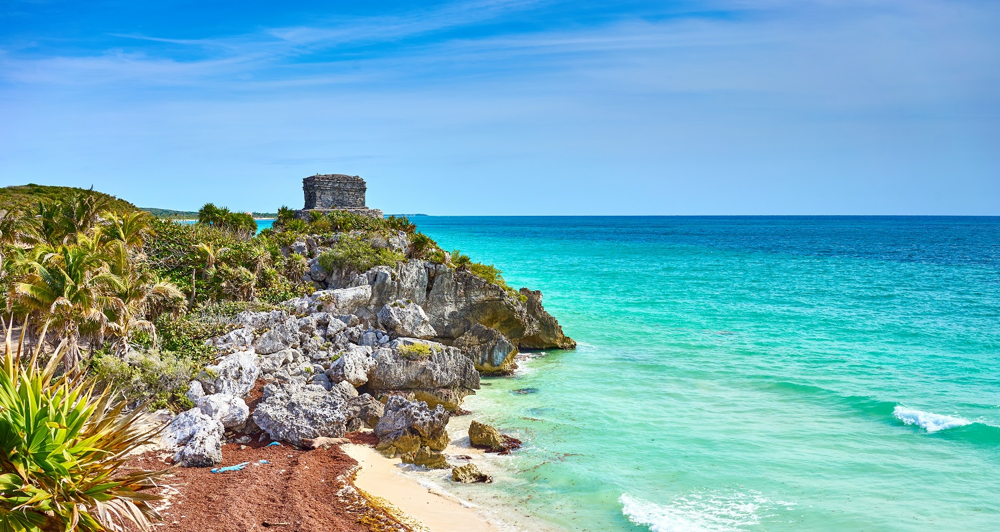
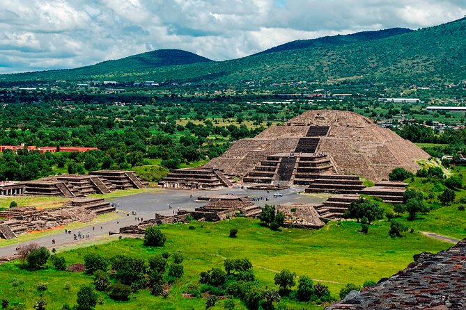
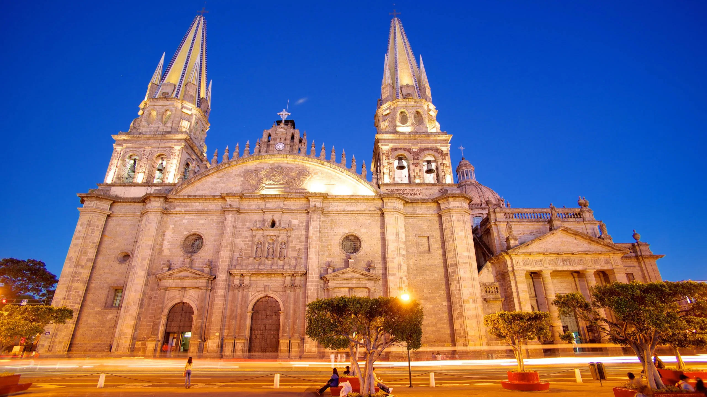

Pontos Turísticos

Vai viajar para o México? Confira nossas dicas sobre os lugares para conhecer no país, seus principais pontos turísticos e passeios que não podem ficar de fora de seu roteiro de viagem pelo México.
1. Chichén Itzá
Chichén Itzá é uma antiga cidade maia localizada na Península de Yucatán, no México. Foi um importante centro político, religioso e econômico dessa civilização. O principal monumento é a Pirâmide de Kukulkán (também chamada de El Castillo), construída em homenagem ao deus-serpente. Ela foi projetada com grande precisão: durante os equinócios, a sombra forma a imagem de uma serpente descendo as escadas.

2. Cancún e Riviera Maya
Cancún e a Riviera Maya ficam na Península de Yucatán, banhadas pelo Mar do Caribe. São famosos destinos turísticos do México, conhecidos por suas praias de areia branca, mar azul-turquesa e resorts luxuosos. Além das praias, há muitas opções de lazer, como mergulho em recifes de corais, visita a cenotes (poços naturais de água cristalina) e ruínas maias próximas, como Tulum e Cobá. É uma região que combina beleza natural, história antiga e infraestrutura moderna, atraindo turistas do mundo todo.
3. Teotihuacán
Teotihuacán é uma antiga cidade pré-colombiana situada perto da Cidade do México. Foi um dos maiores centros urbanos das Américas antes da chegada dos europeus. O local é famoso por suas Pirâmides do Sol e da Lua e pela Avenida dos Mortos, que mostram o avanço da arquitetura e da religião dos povos antigos. Hoje, é um Patrimônio Mundial da UNESCO e um dos principais sítios arqueológicos do México, muito visitado por turistas e estudiosos.
4. Guadalajara
Guadalajara é uma das principais cidades do México, localizada no estado de Jalisco. É conhecida como o berço do mariachi e da tequila, símbolos da cultura mexicana. A cidade mistura tradição e modernidade, com belos prédios históricos, praças animadas e festas típicas. Também é um importante centro cultural e econômico do país.
5. Cabo San Lucas
Cabo San Lucas está localizado no sul da Península da Baixa Califórnia, no México, onde o Oceano Pacífico encontra o Mar de Cortez. É um dos destinos turísticos mais famosos do país, conhecido por suas praias de águas cristalinas, falésias impressionantes e o Arco de Cabo San Lucas, uma formação rochosa natural que virou símbolo da região. O local oferece diversas atividades, como mergulho, passeios de barco, pesca esportiva e observação de baleias, além de ter resorts luxuosos e vida noturna animada.

Voltar para o início